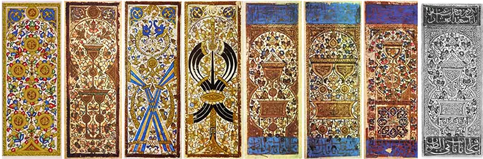
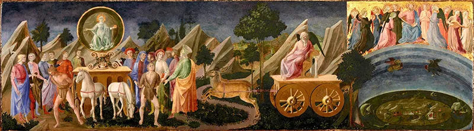
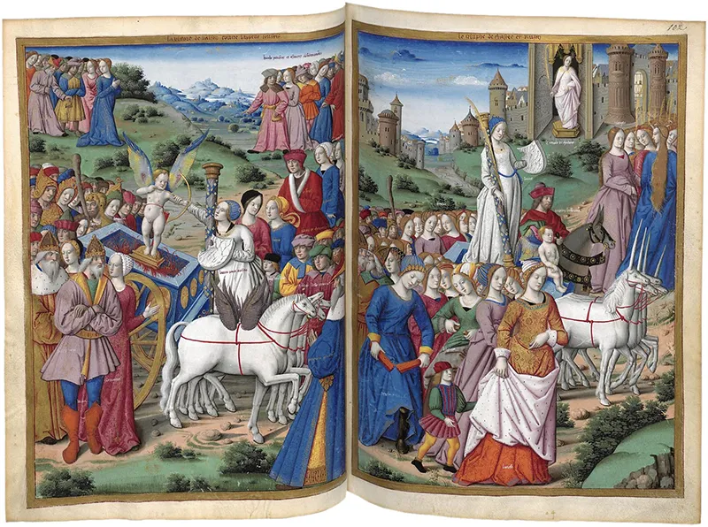

Chapter One
The Genesis of Play
Sources: International Playing-Card Society Historical Tech Archives, Tang Dynasty Imperial Court Chronicles, and Mediterranean Silk Trade Customs Manifests.
Global Pre-History of Playing Cards
Long before Renaissance nobility commissioned painted Italian decks, the physical medium of playing cards was invented in China.

Tang Dynasty China (9th Century CE) - The "Leaf Game"
The earliest credible references to card play appear in late Tang Dynasty texts. In 868 CE, documents describe Princess Tongchang playing a "leaf game" (yezi xi) with members of the royal clan. Modeled after early paper currency, these paper "leaves" were manufactured using early woodblock printing.

The Transcontinental Journey to Europe
Chinese card game variants traveled westward along major trade networks through India and Persia. By the 13th Century, Islamic merchants in Egypt refined the system into highly structured 52-card decks with four suits: Polo Sticks, Coins, Swords, and Cups.
Petrarch’s Triumphs and Literary Parallels

The 22 cards we know today as the Major Arcana were originally called carte da trionfi (cards of the triumphs). Their structure directly mirrors the psychological hierarchy found in Francesco Petrarch's celebrated 14th-century poem, I Trionfi.
Before modern psychology defined archetypes, medieval and Renaissance literature used them to explore the human condition. A prime literary example is Geoffrey Chaucer’s 14th-century masterpiece, The Canterbury Tales, showcasing structural journeys through distinct archetypal figures.

| Chaucer's Pilgrim | Tarot Archetype | Shared Structural Themes |
|---|---|---|
| The Knight | The Emperor | Chivalry, discipline, focused ambition, order |
| The Prioress | The High Priestess | Intuition, divine mystery, quiet contemplation |
| The Wife of Bath | The Empress | Abundance, independence, sensory pleasures |
| The Parson | The Hierophant | Spiritual wisdom, institutionalized morality |
| The Pardoner | The Devil | Spiritual deception, material greed, illusion |
![A collage of five colorful medieval manuscript miniatures from the 15th-century Ellesmere manuscript, each depicting a character from Geoffrey Chaucer’s The Canterbury Tales riding a horse. The top-left panel shows the Prioress in a dark habit; the top-right shows the Knight in armor; the central panel features the Pardoner in a bright red robe holding a vernicle; the bottom-left shows the Wife of Bath astride a horse wearing a wide-brimmed hat; and the bottom-right shows the Parson in a red hooded cloak.](../assets/assets/genesis/chaucer-800.webp)
Historical Note
The Custom of Tarocchi Appropriati: Centuries before occultism viewed the deck as a system for charting personality, Renaissance elites used the cards for character mapping. In a popular parlor game called tarocchi appropriati, courtiers drew a trump card, and local court poets immediately composed extemporaneous, witty verses matching the structural meaning of that card to the person’s virtues or social reputation.
![An uncut sheet fragment of early Renaissance Italian Tarocchi (Tarot) playing cards dating from around 1500. The sheet features rows of rectangular cards showing allegorical figures and trump symbols rendered as detailed woodblock prints. The designs are filled with a vibrant orange-red stencil wash against an aged parchment background. Figures include classic virtues, an angel with a sword, a figure holding a shield displaying a city view, and numbered cards labeled with Roman numerals like VIII and VI at the bottom.](../assets/genesis/tarocchi-800.webp)